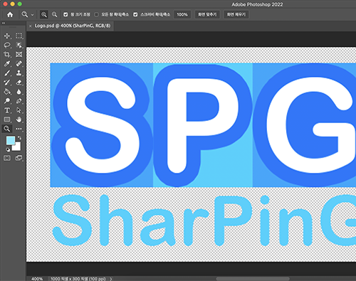

写真

|
イメージを抽出する様子 |
|  |
ロゴをデザインする様子 |
背景と目的
ポートフォリオ、ブログなどに自分を効果的に表現するためです。
ポートフォリオ、ブログなどに自分を効果的に表現するためです。
能力を強化した過程
まず、iPadにスケッチをして大まかなデザインを構想しました。 このように構想したデザインをもとに、フォトショップにある機能を活用して私だけのデザインを行いました。 もし、どうすればいいかわからないときは、Googleで検索して方法を調べました。 このようにデザインを終えた後、画像として保存しました。
まず、iPadにスケッチをして大まかなデザインを構想しました。 このように構想したデザインをもとに、フォトショップにある機能を活用して私だけのデザインを行いました。 もし、どうすればいいかわからないときは、Googleで検索して方法を調べました。 このようにデザインを終えた後、画像として保存しました。
強化された能力
- 実装、問題解決能力：フォトショップでデザインし、画像を編集することで強化されました。
- 探索力：どのようにデザインするかを考えるプロセスを通して強化されました。
追加の説明
- 関連資格証「Craftsman Computer Graphics Operation」も取得しました。